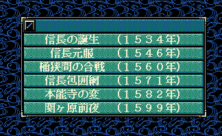

シナリオメニュー型＆ カスタム::On_シナリオメニュー表示直前() {
return NULL;
}

シナリオメニュー型＆ カスタム::On_シナリオメニュー表示直前() {
シナリオメニュー型 menu = {
" 三人の養子 （１５０７年）",
"", // 元のまま
" 相剋の果て （１５６５年）",
"信長包囲網･改（１５７１年）",
"本能寺の変･改（１５８２年）",
"関ヶ原前夜･改（１５９９年）"
};
return menu;
// 変更しない場合NULL
return NULL;
}